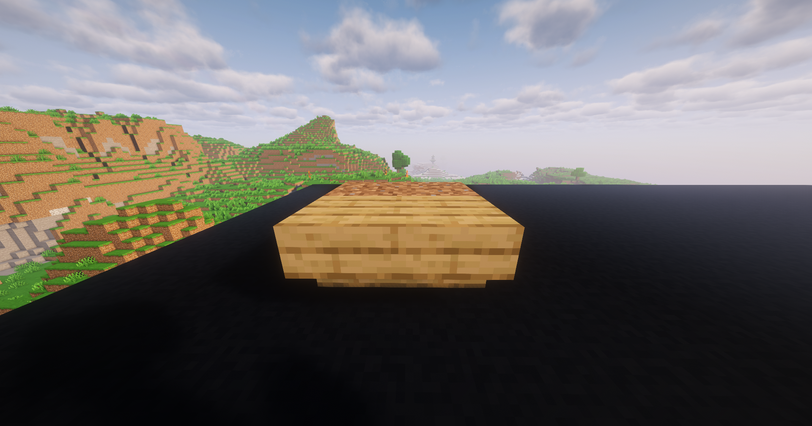
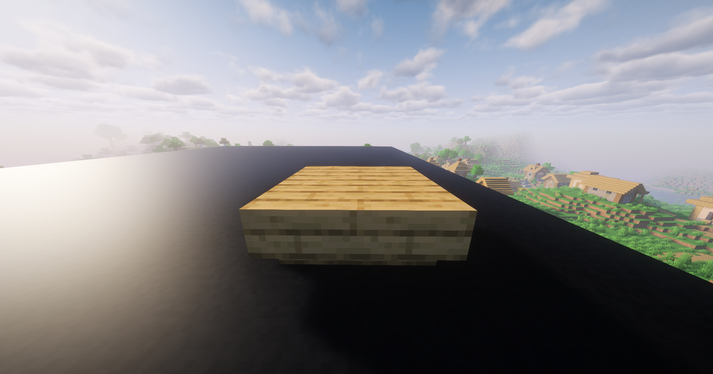
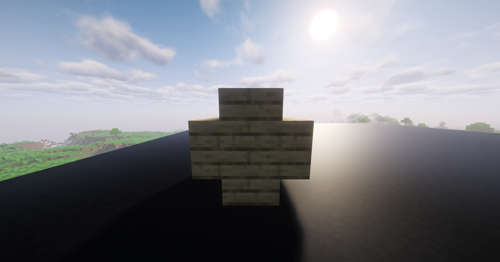
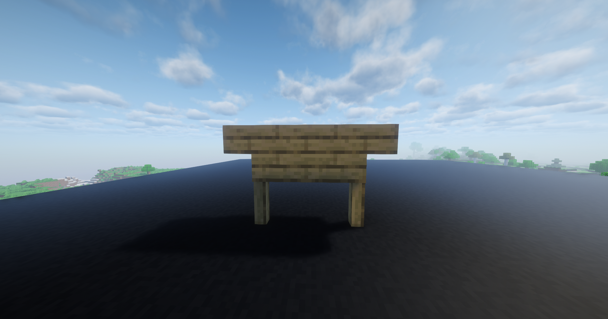
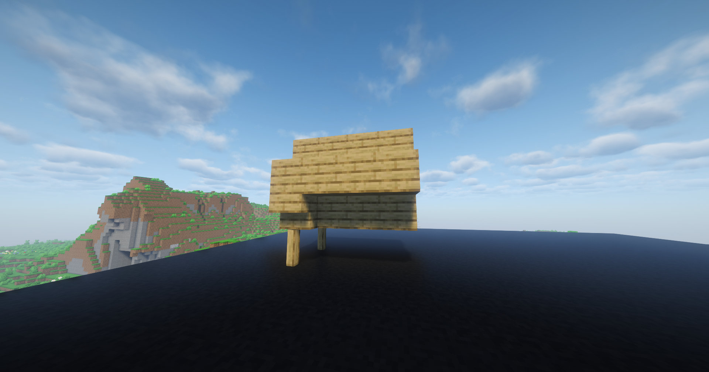
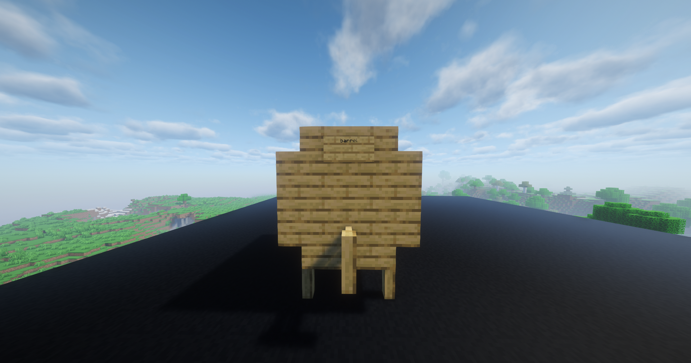

BUDOWA BECZEK
Beczki mogą być budowane z tych rodzajów budulca:
- Drewno Brzozowe
- Drewno Dębowe
- Drewno Dżunglowe
- Drewno Świerkowe
- Drewno Akacjowe
- Drewno Ciemnodębowe
- Drewno Szkarłatne
- Drewno Spaczone
- Drewno Namorzynowe
- Drewno Wiśniowe
- Drewno Bambusowe
- Drewno Bladodębowe
- Cięta Miedź
W przykładach użyte zostało drewno dębowe, lecz budowa nie różni się dla innych rodzajów budulca
Mała Beczka

Krok 1. Połóż dwa bloki tymczasowe obok siebie i dzięki nim postaw dwa "odwrócone" schodki obok siebie klikając na górną połowę tymczasowego bloku.
Krok 2. Zniszcz bloki tymczasowe. Przy postawionych schodkach, z drugiej strony, postaw dwa kolejne, również "odwrócone".
Krok 3. Na stworzonej bazie postaw schodki tak, aby całość tworzyła znak "+".
Krok 4. Podejdź od przedniej lub tylniej strony plusa i na schodku znajdującym się w prawym dolnym rogu postaw tabliczkę z napisem "barrel".

Jeżeli beczka została zbudowana w prawidłowy sposób, na czacie pojawi się wiadomość: "Barrel created."
Gotowe!
Duża Beczka

Krok 1. Połóż dwa płotki obok siebie w linii prostej zachowując jeden blok odstępu

Krok 2. Postaw blok tymczasowy pomiędzy nimi. Na nim, postaw blok, a następnie "odwrócone" schodki po jego obu stronach.
Krok 3. Zniszcz blok tymczasowy. Na schodkach i bloku dobuduj kolejne piętro bloków, a na samym końcu, dodaj kolejny blok na środku.

Krok 4. Przedłuż powstały znak "+" tak, aby miał on razem cztery bloki długości. Pamiętaj, aby środek również wypełniony był blokami.
Krok 5.. Na dolnej części plusa, dodaj "odwrócone" schodki po całej długości. "Normalnie" obrócone schodki natomiast dodaj do części górnej. Proces powtórz po drugiej stronie.

Krok 6. Na tym końcu, który nie posiada "nóżek", dodaj je tak, jak w kroku 1.

Krok 7. Na przedniej lub tylniej stronie dodaj "kran" na bloku znajdującym się pomiędzy "nóżkami".

Krok 8. Na bloku znajdującym się dwa bloki nad "kranem" postaw tabliczkę z napisem "barrel".
Jeżeli beczka została zbudowana w prawidłowy sposób, na czacie pojawi się wiadomość: "Barrel created."
Gotowe!